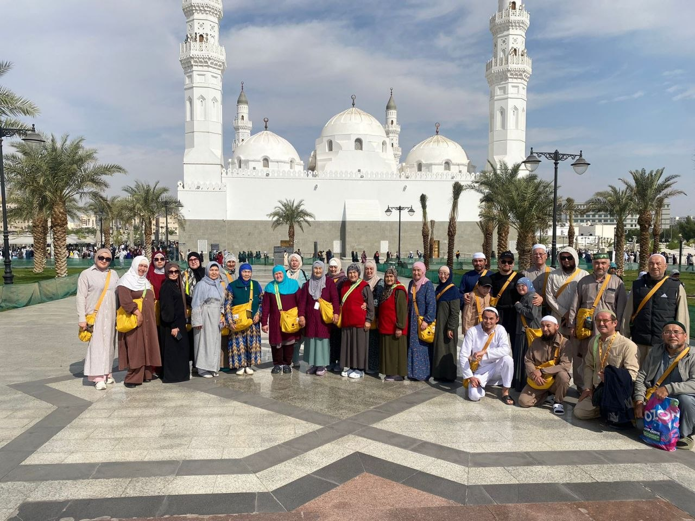
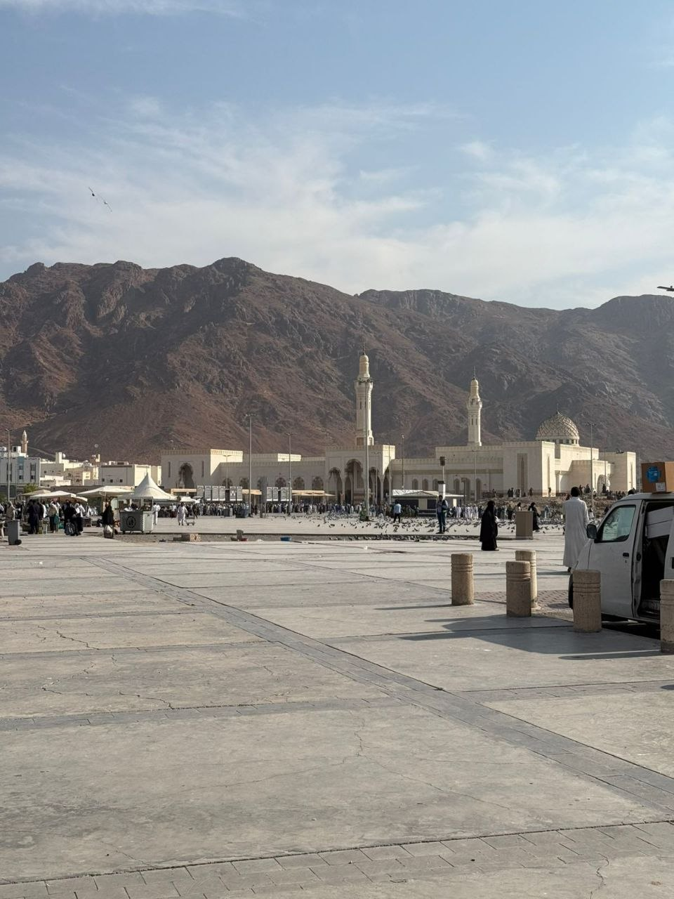
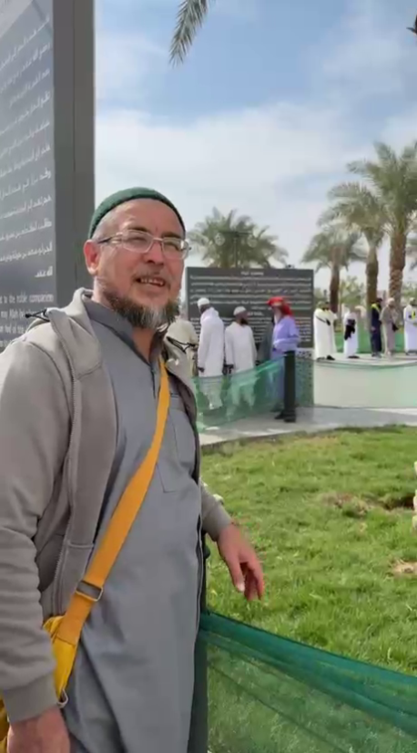

Настоящие моменты нашей поездкиК священным местам.
Вместе с Ильфатом.
Умра с личным сопровождением из Зауралья.
От первой встречи в Баймаке до возвращения домой.
Ваша ближайшая умра
Поездка в Мекку и Медину
с личным сопровождением Ильфата.

11 декабря 2026 года
Умра из Уфы
Групповая поездкаВылетИз Уфы
Перелётflydubai
Мекка
Отель «Амджад Дыифа» или аналогичный.
Медина
Отель «Марджан» или аналогичный.
- Мекка и Медина
- Личное сопровождение Ильфата
Полный состав услуг, питание, возможные доплаты и порядок оплаты уточните у Ильфата до бронирования.
Условия указаны по актуальной афише. Размещение возможно в указанных отелях или аналогичных — уточните детали перед бронированием.
Афиша
ближайшей умры
28 ноября — 11 декабря 2026
Вылет из Уфы. Руководитель поездки — Ильфат хазрат Юнусбаев.
Сохраните афишу, чтобы даты и телефон организатора были под рукой, или поделитесь ею с близкими.
Позвонить Ильфату Скачать афишу

ИльфатОрганизатор и сопровождающийРядом с вами —
на всём пути
Знакомство начинается дома, в Зауралье. А дальше — дорога, священные места и возвращение вместе.
Ильфат сам организует поездки в умру и лично сопровождает паломников. На этих фотографиях — участники поездки из Баймака в Медину и Мекку и обратно.
Если вы отправляетесь впервые, позвоните Ильфату: обсудите подготовку, маршрут и вопросы, которые важны именно вам.
Поговорить с ИльфатомВаша поездка.
Личное сопровождение.
Для одного человека, семьи или небольшой компании. Возможность такого формата, даты и программу обсудите напрямую с Ильфатом.
Обсудить индивидуальную умруВместе с самого начала
Из Баймака
Отправляетесь вместе с Ильфатом — он сопровождает вас в поездке и на обратном пути.
Из другого региона
Встречаетесь в Уфе или Москве и продолжаете путь вместе. Место встречи согласуете заранее.
Стоимость индивидуальной поездки — по договорённости.
Моменты, которые
остаются с нами
Баймак · Медина · Мекка · Баймак
Фотографии из поездки с Ильфатом.
Перед поездкой
Можно ли поехать в умру впервые?
Обсудите с Ильфатом, как проходит поездка, какая подготовка потребуется и какую помощь он оказывает. Вы сможете задать вопросы до принятия решения.
Я из другого региона. Где мы встретимся?
Для индивидуального сопровождения можно договориться о встрече в Уфе или Москве, а дальше отправиться вместе с Ильфатом. Точное место и время согласовываются лично.
Что входит в стоимость 1 690 $?
Предварительные условия ближайшей групповой поездки приведены выше. До бронирования уточните полный состав пакета, документы, питание, возможные доплаты и порядок оплаты по телефону +7 (963) 891-21-07.
Как записаться и какие нужны документы?
Позвоните Ильфату. Он расскажет о наличии мест, необходимых документах, подготовке и дальнейших шагах. Данные документов через этот сайт не собираются.
Начните с разговора
Расскажите, когда и с кем вы хотите отправиться.
Ильфат ответит на ваши вопросы о поездке.